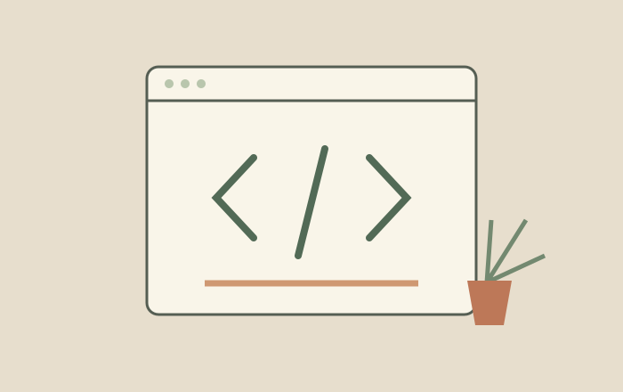

一个轻盈的博客，只需要一点点开始
没有复杂的后台，也能拥有自己的写作空间。记下这个静态博客的构成与更新方式。

这是一篇建站示例文章，供展示阅读效果。你可以在仓库中替换为自己的原创内容。
静态，也可以很完整
这是一篇使用说明示例。这个博客由 HTML、CSS 和少量 JavaScript 构成，文章在构建时就被生成成独立网页。关闭 JavaScript 仍然可以阅读文章；启用后，可以使用搜索、分类筛选和主题切换。
内容与页面分开
文章保存在 content/posts.json 中。每篇文章包含英文标识 slug、标题 title、分类 category、日期 date、摘要 summary，以及正文段落 sections。添加一篇文章后，在项目根目录运行 npm run build，就会生成可发布的页面。
把更新发布出去
站点文件位于 docs 目录。完成构建和检查后，把内容与生成页面一起提交到 main 分支。GitHub Pages 会从 main 分支的 docs 目录发布更新。网站不包含管理后台，新增文章通过修改仓库内容完成。